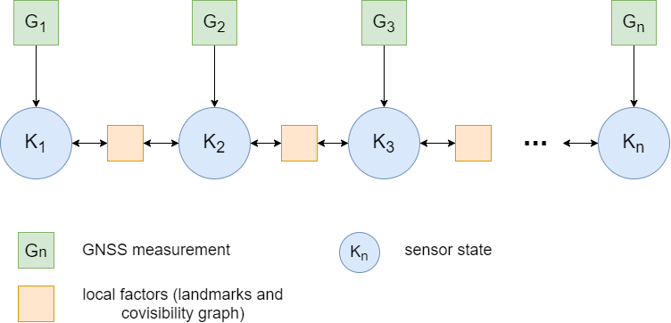
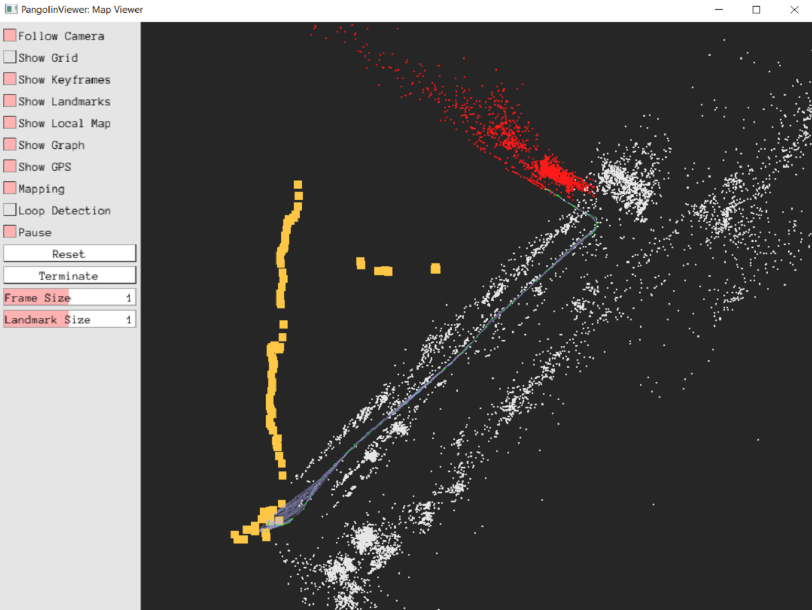
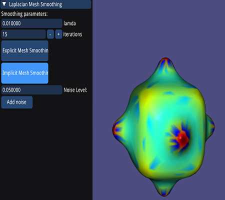

Shubham Singh
Mixed Reality | Computer Vision | Unity3D
Hello, World !
Shubham Singh
MRes VR @ UCL
I have completed my Master of Research (MRes) in virtual reality from University College London in Oct'20. My current
research focus includes the development of novel mixed reality systems, visual SLAM,
and 3D computer vision. I am particularly interested in the problem of spatial understanding and cross-platform collaboration using
mixed reality.
Research works
- Fusion of GNSS measurement into VSLAM Bundle Adjustment process for geo-referenced positioning and attitude. [Report] [Project]
- Real-time Collaboration Between Mixed Reality Users in Geo-referenced Virtual Environment. [Paper]
Check demo videos on my youtube channel for more recent works.
Programming
Skills
Others
Computer Graphics Mixed Reality (VR/AR/MR) Image processing Computational Photography Acquisition and Processing of 3D geometry Matlab WebRTC Mapbox SDK Git VCS Socket Prorgamming FFMPEG web front-endUsing GNSS data for geo-referenced VSLAM (C++/OpenCV/G2O/DBoW2/OpenVSLAM/Eigen)
|  |  |
The fusion of GNSS measurements into the visual SLAM (VSLAM) system, to achieve accurate localization of the sensor system on a geographical scale. This project proposes tightly coupled VSLAM system that fuses the GNSS measurement in the graph-based global bundle adjustment to remove the scale ambiguity of the monocular SLAM and correct the noisy GNSS measurements. The geo-localization of the robot and the estimation of attitude in this manner eliminates the need for magnetometer and gyroscope, which are very noisy and highly susceptible to environmental disturbances.
Laplace-Beltrami and Eigen analysis (C++/libigl/eigen/spectra/flann/glfw)

|
 |
Using Laplace-Beltram (divergence of the gradient) operator to perform curvature estimation, eigen analysis and smoothing of the mesh. Images show the results for following operations:
- Uniform discretization for mean curvature
- Uniform discretization for gauss curvature
- Non-uniform cotan discretization
- Eigen value analysis and fourier reconstruction for iteration - 10, 30 and 60
- Implicit laplacian mesh smoothing (I-λL)P(t+1)=P(t)
ICP (C++/libigl/eigen/nanoflann/glfw)
ICP (Iterative Closest Point), is an iterative algorithm for aligning/registering two different mesh/point cloud, based on closest euclidean distance between source and target. Here I have implemented both the point-to-point and point-to-plane algorithm and made use of KD-Tree to establish point pair correspondence from source to target.
- Transformation of 3D object and implementation of ICP (point-to-point) with optimization to minimize alignment error E(R,t) = Σ||(R*pi + t - qi )||^2
- Effect of rotation on aligment.
- Perturb mesh with zero-mean Gaussian noise.
- Subsampling for point-to-point correspondence
- Multiple scans alignment (5 meshes)
- Iterative closes point (Point-to-plane) with optimization to minimize alignment error E(R,t) = Σ||(R*pi + t - qi ).ni||^2
Smart city experience (Mapbox/Unity3D/ARCore/PUN/VoIP)
The aim is to provide a more engaging and immersive experience to the visitors and people of the city by leveraging the benefits of mixed reality technologies. Some of the features include:
- Travel guide. Aimed to assist and provide an immersive experience of the city to the user across the platform. The contents of immersive experience are retrieved at run-time from the cloud, which can be accessed on-demand depending on users geolocation. The application relies upon the GPS location and camera service to reinforce GPS coordinate for precisely tracking the users on street level.
- Collaboration. Aimed to provide real-time collaboration between users across the platform (VR and AR ). The remote user is represented using an avatar, that is synchronized with a geo-referenced position and attitude. For collaboration, user can use voice conferencing, freehand drawing, share 3D models or multimedia, etc.
Procedural Planet System (WebGL/JS/GLSL)
Demo project to implement procedural planet system in WebGL using Javascript, and GLSL for shading. The implementation include:
- Mesh tessellation (Cube, House, Sphere and ring)
- Scene Graph
- Animation system with keyframes and linear interpolation
- Visual effects (fragment shader for fog)
FABRIK (C#/Unity/IK/Heatmaps/CG)
FABRIK, is an heuristic iterative algorithm of solving IK. Here I have tried to implement this novel algorithm for solving joint transform for tracking of target object in XZ-plane and identifying each joints configuration in the process. Further with reference from published paper I have implemented few test cases to validate the results. The articulated chain system with 5 links has the link length of 5, 4, 3, 2, 1 respectively and the complete movement is restricted on XZ-plane with allowed rotation of each joint along Y-axis only. The XZ-plane is represented with grid lines which is used to plot/define target position which triggers FABRIK algo to calculate joint configuration with respect to defined temporal and permanent constraints of angular velocity, swing, and twist.
- Controls: Orbit camera movement with right click to move around and mouse scroll wheel to zoom in and out of grid. Left clicking anywhere on the grid sets new target position.
- Constraints: This project implements one temporal constraint of angular velocity and two permanent constraint of swing and twist value for each joint.
- Heatmaps: The colour in heatmap varies between shades of “RED” and “GREEN”, where red is for not-reachable positions as opposed to green which represents reachable positions. Also, smaller the size of circle means greater is the accuracy of end-effector to navigate to the point. The visual representation is managed from surface shader applied on the grid plane.
- Shader: Generally CG doesn't allow array data types to be passed from unity as parameter and hence custom property is created to receive float4 array in fragment shader.
Space Invader (C++/DirectX/VS)

|

|

|
Space Invader, a personal project which I worked upon to get an understanding of DirectX work flow. It's very small
arcade style space invasion game, where player controls ship and shoots at enemies and asteroids in dark space. The game progresses
from level 1 to 10, where the number and size of asteroids varies along with number of enemy ships.
Once you shoot any asterois it splits into 2 parts, which goes like chain splitting until the size of asteroid is zero.
- Gameplay: Gameplay and mechanics accouting for behaviour of each components.
Nuspace (C#/C++/Unity/GCP)
Nuspace, is a SaaS based solution which serves 2 individual product. I have worked on both the products - Atom and Assist. Atom is virtual 3D conferencing with collaboration features such as voice, avatar, 3D environments, etc. Assist is more focused for on demand remote assistance and remote monitoring of operations. In this user can collaborate with remote user by Livestreaming, screen sharing, embedded browser, etc. This is specifically targeted for AR devices.
- Atom: recording and playing back of entire session, the user can record the entire 3D online session and save it locally which can then be saved to review or reference purpose afterwards.
- Atom: interactive object update and design tools feature set, that allows the user to interact with dynamically loaded model.
- Atom: simulation of evacuation scenario in industrial environment and fluid motion simulation.
- Assist: architecting and implementing the entire solution. Extending support for smart wearable devices (Vuzix and Moverio versions).
- Assist: Live streaming of user stream and broadcasting it to all the other users in current session. The live stream can also be recorded by "Host" and saved/shared in mp4 format.
Distance Measurement(C#/Unity/Spatial Mapping/Hololens)
HoloDistance, was a POC project where the idea was to
test the accuracy and feasibility of distance measurement using Hololens. The user was able to measure real world distance
between two or more consecutive points. So initially the map of current physical space was created using spatial Mapping
capability of Hololens and then user plots the point. The distance is measured in meter scale.
- Testing Spatial mapping capabilities and indentifying shortcomings.
- The acuracy of meaurement